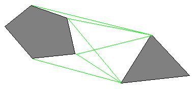
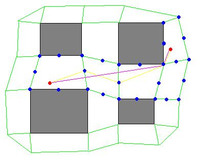
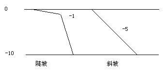

这次故事背景的主人翁是我的一个同事，他虽然是个3D网游苦手，但热情不减。每周游戏时间，他都非常积极参与副本活动，玩得非常爽。不过偶然也有不爽的时候，比如说最近这次，他发现天下贰的自动寻路出bug了，在点了自动寻路后，人物在路上掉到一个坑里面，再也上不来了。
这到底是什么原因呢？上次的科普中，我只是简单把地图的点划分为walkable/unwalkable，但实际上，游戏当中的地形当然没有这么简单了，除了平地和障碍物，还有水、泥沙地、斜坡、悬崖等等。不同的地形，按游戏的设计，可以有不同的耗费“cost”（比如斜坡、泥沙地走起来要“费力”一点，cost可以设置比平地大一点；又比如像WOW和天下贰，人物都是水陆两用的，但水里面移动也显然要“费力”一点，所以cost应适当大一些；有些比较老的游戏，水则是归为unwalkable一类，这都要看整个游戏的设计）。而3D游戏中，还牵扯到一个地势的问题，也就是“海拔”问题，等下会详细探讨。
扯到地形地势这些，必须讲下地图建模（map representation，下面简称构图）。上次科普中，我漏了介绍这个东西，实际上它是A*算法中一个非常重要的component。什么叫构图？就像我上次用的那个二维矩阵map，它就是一种构图，叫格子图（grids）。像A*这种算法，当然不限于在格子图上跑了，它还可以在比如：多边形地图（polygonal map）、导航网（navigation meshes）、路径点（waypoints）等等的构图上跑。下面稍微简单介绍一下：
多边形地图，实际上是以障碍物（也就是unwalkable的地方）的顶点作一个多边形，然后在不同多边形的顶点之间连上直线（直线不能穿过任何多边形），比如这样一个图：

人物可以沿着障碍物的边或者在绿色直线表示的路径上移动。当穿越一个大区域的耗费是一个固定值时，这种构图能够获得很高的效率。
导航网跟多边形地图相反，它是以walkable的地方作多边形，比如这样一个图：

人物在绿色直线构成的“网”内移动，具体移动的节点，可以是多边形的中心，也可以是顶点，边的中点，或者三者的结合。如图，我们选取顶点和边的中点作为节点，黄色线条是A*跑出来的“最短路径”，粉红色的则是通过path smoothing技术得出来的一条更理想的路径（path smoothing解释：假如节点i和节点i+2能够直达，则移除节点i+1，让节点i直接指向节点i+2；重复这个过程直到相邻节点不能够直达）。
剩下的路径点都听很多了，像CS和DOTA里面的AI图，都要用到路径点。简单来说就是在地图上设定若干个点，人物可以在点与点之间的连线移动。一般来说，合理的设置waypoints可以减轻A*的负担，如果点不多，连线较少，甚至可以把每个点到其它点的最短路径预处理好，而不用实时计算。当然，waypoints不好的地方就是出来的路线比较生硬，所以你看CS里面的机器人走路都是傻傻的，而DOTA里的电脑玩家也不会绕树林或者去打roshan（roshan处没放路径点）。
上面说的是一些常用的构图，实际游戏开发当中，尤其是地图比较大时，往往不会使用单一的构图方式，地图通常都是hierarchical。也就是说，你的地图有多个level的精细度，每一个level选取一种“性价比”最高的构图方式。举个例子，从一个城市的一个小区的一个平房里，去到另外一个城市的一个小区的一个平房里，我们可以这样划分：平房里的障碍物布置比较精细，选用grids；出了房间，小区障碍物数量适中，我们用navigation mesh；到了城市与城市之间，地形相当开阔，这时我们用polygonal map或者预处理好的waypoints就行了。这样得出来的路径往往不是最优的，但会接近最优。其实这么大范围的寻路，路径是否最优，玩家是感觉不出来的；但如果你为了追求最优路径而让A*跑得很慢，机器卡在那，玩家估计砸了屏幕的心都有了。所以说这里除了算法，还蕴涵了我经常挂嘴边的：tradeoff的思想。在这次科普中，我会继续选用grids来构图，因为demo还是console输出，而grids在console条件下的展示比较直观。如果用其他构图，效果就不是那么好呈现了。
回到我们刚才那个问题，人物掉到坑里，到底是怎样一回事呢？看下面这个图：
t
||||||||||||||||||||
| |||
1 | ||
| ||
| ||
|| 2 |||
|| ||
|| ||
|| ||
|||||||| ||||
s ||||||||||||
区域“1”是起点“s”和目标“t”所在的平地，处于同一地势高度；区域“2”是一个盆地，地势比区域“1”要低，它被“|”表示的陡坡紧紧围住。这个地图有个特征，从区域“1”到区域“2”没问题，从区域“2”再上来就有问题了。我同事遇到的那个情景正是如此，从“s”到“t”的最短路径，如果不考虑陡坡，肯定是它们之间的连线，但如果考虑到这种“下去了就上不来”的情况，该如何是好？我们要怎样绕过这个“坑”？你可能说，把陡坡设为unwalkable行不？当然不行，假如我就是要寻路到2里面的点（这种情况需要2里面有些回城点，或者人物自己具有回城的能力才行，不然还是有问题），或者我在靠近“t”的位置开一个缺口，用斜坡“/”这种地形取代陡坡，让人物可以从这个缺口走上来，那这种设定就会有问题了。
这时，我们需要一个辅助的二维矩阵，来记录每个区域的地势。例如区域“1”的所有点，我们把地势设为0；区域“2”的点，设为-10；到了陡坡“|”，该怎样设呢？其实我们要表达陡坡，那就将其地势设置得跟其中一边的地势相当接近就行了，可以设为跟区域“1”相当接近的-1，用这个图表示一目了然：

设好后，我们只要在扩展节点时，增加判断：如果相邻节点减去当前节点的“地势差”大于某个阈值时，就判断成unwalkable，不进行扩展就行了。在这里，阈值可以设为7（只要<9且>=5就可以了，想想为什么？），这个数值使得地势为0的区域可以经过“陡坡”，进入地势为-10的区域，反之不行；而且能够让这两个区域经过“斜坡”都能互相进入，这就是我们想要的。好，说了这么多，看代码和演示吧：
from heapq import heappush, heappop
class Node(object):
def __init__(self, x, y, g, parent_node):
self._x = x
self._y = y
self._g = g
self._parent_node = parent_node
@property
def x(self):
return self._x
@property
def y(self):
return self._y
@property
def g(self):
return self._g
@property
def parent_node(self):
return self._parent_node
class OpenList(object):
# open list 的封装
def __init__(self):
self._heap = [] # 保存(f, (x, y))，相当于优先队列，每次弹出的必定是f值最少的坐标
self._dict = {} # 保存(x, y)到相应node的映射，用于快速从open list里判重
def add_node(self, f, node):
heappush(self._heap, (f, (node.x, node.y)))
self._dict[(node.x, node.y)] = node
def get_node(self, x, y):
return self._dict.get((x, y), None)
def pop_node(self):
f, (x, y) = heappop(self._heap)
node = self._dict.get((x, y), None)
if node:
# 我的A*实现使用了一个小trick来提高判重效率，使得self._heap和self._dict不是100%同步的，但不影响正确性
del self._dict[(x, y)]
return (x, y), node
def __len__(self):
return len(self._heap)
map = [
# 空白表示平地，“|”表示陡坡，等下还有个“/”表示斜坡，“s”和“t”为了编程方便，没有在地图里写死
' ',
' ',
' ',
' |||||||||||||||||||| ',
' | ||| ',
' | || ',
' | || ',
' | || ',
' || ||| ',
' || || ',
' || || ',
' || || ',
' |||||||| |||| ',
' |||||||||||| ',
' ',
' ',
' ',
' ',
]
terrain_cost = {
# 不同地形的cost，这里比较简单，只有3种。
# 陡坡为什么是1？因为从高地方走到低地方，跟平地一样容易；而反之会有unwalkable的判定。所以障碍“x”也不需要写在这里
' ': 1, # 平地
'|': 1, # 陡坡
'/': 2, # 斜坡
}
# 地势高度，默认设为0
terrain_height = [[0 for v in range(len(map[0]))] for w in range(len(map))]
# 地势高度差阈值
MAX_HEIGHT_DELTA = 7
# directions:
# NW N NE
# W M E
# SW S SE
directs = (
{'dx': -1, 'dy': 0, 'cost': 10}, # N
{'dx': 0, 'dy': 1, 'cost': 10}, # E
{'dx': 1, 'dy': 0, 'cost': 10}, # S
{'dx': 0, 'dy': -1, 'cost': 10}, # W
{'dx': -1, 'dy': 1, 'cost': 14}, # NE
{'dx': -1, 'dy': -1, 'cost': 14}, # NW
{'dx': 1, 'dy': -1, 'cost': 14}, # SW
{'dx': 1, 'dy': 1, 'cost': 14}, # SE
)
def set_area_height(x, y, terrain, height):
# 小广搜，对同一片相连的地形区域染色，设为同一地势高度；实际当中这事情都是预处理好的，不需要在跑A*之前重新设
assert(map[x][y] == terrain)
to_visit = set([(x, y)])
visited = set()
max_x, max_y = len(map) - 1, len(map[0]) - 1
while len(to_visit) > 0:
cur_x, cur_y = to_visit.pop()
terrain_height[cur_x][cur_y] = height
visited.add((cur_x, cur_y))
for v in directs:
next_x, next_y = cur_x + v['dx'], cur_y + v['dy']
if next_x > max_x or next_x < 0 or next_y > max_y or next_y < 0 \
or map[next_x][next_y] != terrain \
or (next_x, next_y) in visited \
or (next_x, next_y) in to_visit:
continue
to_visit.add((next_x, next_y))
def astar(start_node, target):
open_list = OpenList()
close_list = set()
max_x, max_y = len(map) - 1, len(map[0]) - 1
open_list.add_node(0, start_node)
while len(open_list) > 0:
(cur_x, cur_y), cur_node = open_list.pop_node()
if (cur_x, cur_y) in close_list:
continue
close_list.add((cur_x, cur_y))
if cur_x == target.x and cur_y == target.y:
# 当前节点是目标节点，通过回溯找到最短路径
path = [cur_node, ]
next_parent = cur_node.parent_node
while next_parent is not None:
path.append(next_parent)
next_parent = next_parent.parent_node
return True, path
# 遍历当前节点各个方向上的相邻节点
for v in directs:
next_x, next_y = cur_x + v['dx'], cur_y + v['dy']
if next_x > max_x or next_x < 0 or next_y > max_y or next_y < 0 \
or map[next_x][next_y] == 'x' \
or (next_x, next_y) in close_list \
or terrain_height[next_x][next_y] - terrain_height[cur_x][cur_y] > MAX_HEIGHT_DELTA:
# 节点不可达，或者已经在close_list里面，或者地势差太高，不能前进
continue
# f = g + h, g表示起点到该相邻节点的实际距离，h是相邻节点到目标节点的估算值
next_g = cur_node.g + v['cost'] * terrain_cost[map[next_x][next_y]]
# manhattan距离
next_h = 10 * (abs(next_x - target.x) + abs(next_y - target.y))
next_f = next_g + next_h
# 看该相邻节点是否已经在open_list里面
old_node = open_list.get_node(next_x, next_y)
if old_node:
if next_g < old_node.g:
# 更新g、f值，和改变父节点：直接用新构造的node覆盖原来的node
next_node = Node(next_x, next_y, next_g, cur_node)
open_list.add_node(next_f, next_node)
else:
next_node = Node(next_x, next_y, next_g, cur_node)
open_list.add_node(next_f, next_node)
return False, None
def test_astar():
print "before A* :"
for v in map:
print v
start_node = Node(13, 10, 0, None)
target_node = Node(1, 40, 0, None)
# 设置地势高度（设最大那片面积为基点，默认为0，不用重新设）
set_area_height(3, 25, '|', -1)
set_area_height(4, 25, ' ', -10)
#set_area_height(6, 36, '/', -5)
success, path = astar(start_node, target_node)
print "after A* :"
if not success:
print 'target unreachable'
else:
# 显示找到的路径
res = []
for i in xrange(len(map)):
res.append([])
for j in xrange(len(map[0])):
res[i].append(map[i][j])
for v in path:
res[v.x][v.y] = '.'
for row in res:
print "".join(v for v in row)
if __name__ == '__main__':
test_astar()
程序运行结果：
before A* :
||||||||||||||||||||
| |||
| ||
| ||
| ||
|| |||
|| ||
|| ||
|| ||
|||||||| ||||
||||||||||||
after A* :
.........................
.
|.||||||||||||||||||
. |||
. ||
. ||
. ||
.| |||
.|| ||
. || ||
. || ||
. |||||||| ||||
. ||||||||||||
可以看到，找到的最优路径是紧贴陡坡而没有掉下去的。那我们改改地图，在陡坡圈的右上方开一个缺口，做成“斜坡”：
||||||||||||||||||||
| |||
| ||
| |/ <---- 看到没有？在这个地方
| ||
|| |||
|| ||
|| ||
|| ||
|||||||| ||||
||||||||||||
接着将该点的地势设为-5，再跑跑A*，看看这次效果是怎样的：
before A* :
||||||||||||||||||||
| |||
| ||
| |/
| ||
|| |||
|| ||
|| ||
|| ||
|||||||| ||||
||||||||||||
after A* :
.
.
|||||||||||||||||||| .
| ||| .
| || .
| |.
| ....................||
||. |||
.| ||
. || ||
. || ||
. |||||||| ||||
. ||||||||||||
看到没有？程序知道这后边有个缺口了，果断走下去从缺口来到目标；而不是像刚才那样，知道下去了就不能上来，被迫去抄远路。
不过话说回来，我同事遇到的那个问题，也不一定是它的A*算法写错了，也有可能是它的数据，比如说地势这个值没设好，使得A*做出了错误的判断。再牛逼的算法，在错误的数据面前，也是无能为力的。
好，A*简介就到这里，下次有机会，我会从构图或者启发式函数当中选取一个方面，进行深入探讨，谢谢大家！